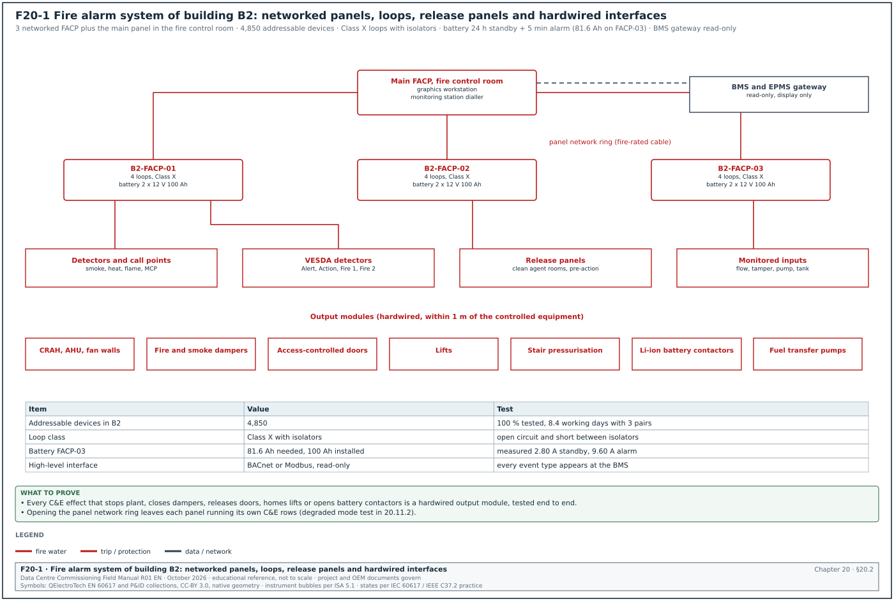
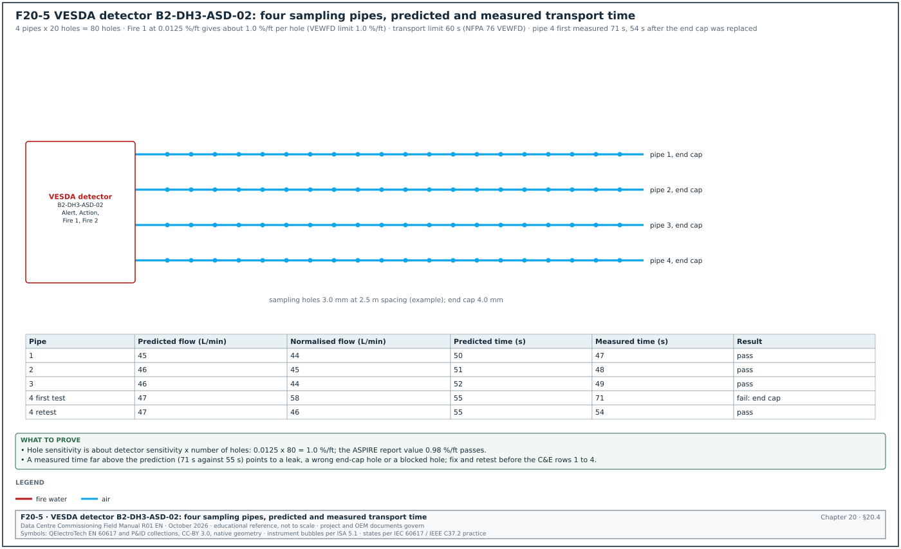
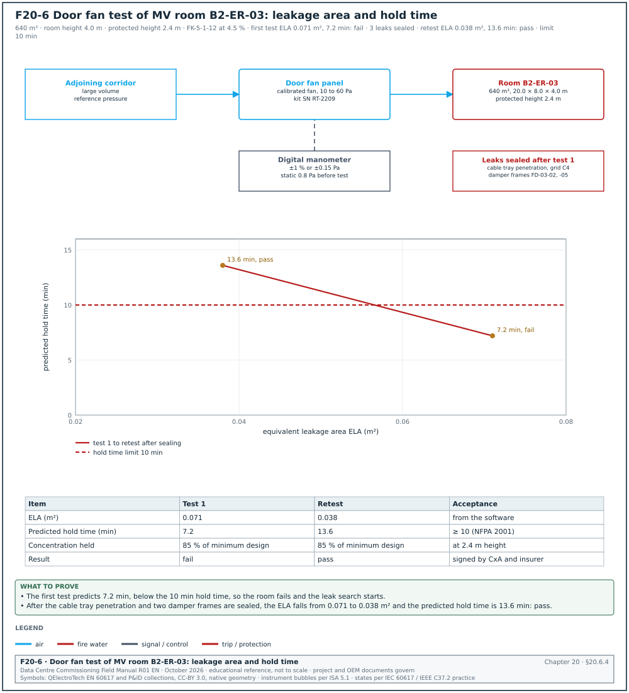
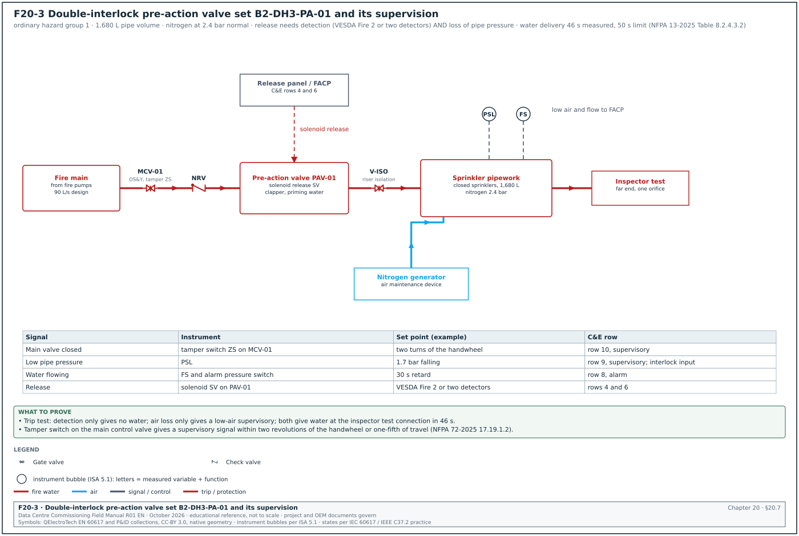
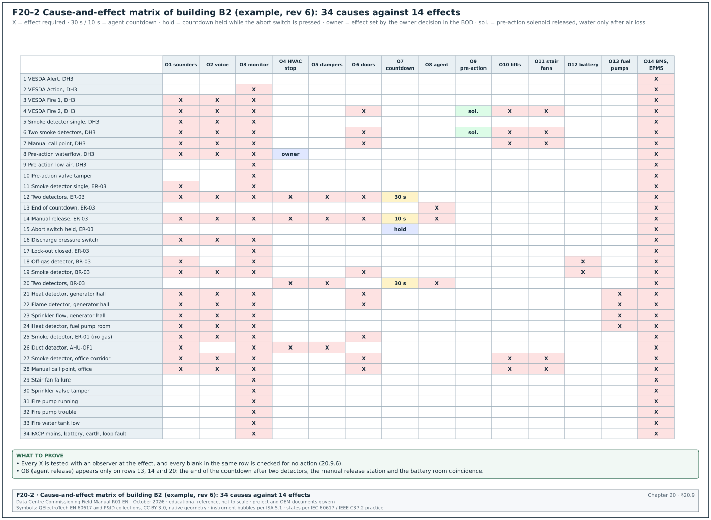
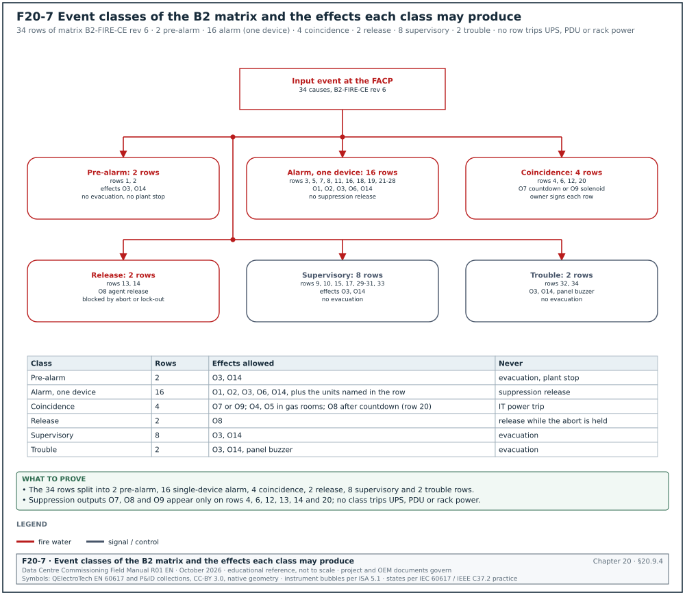
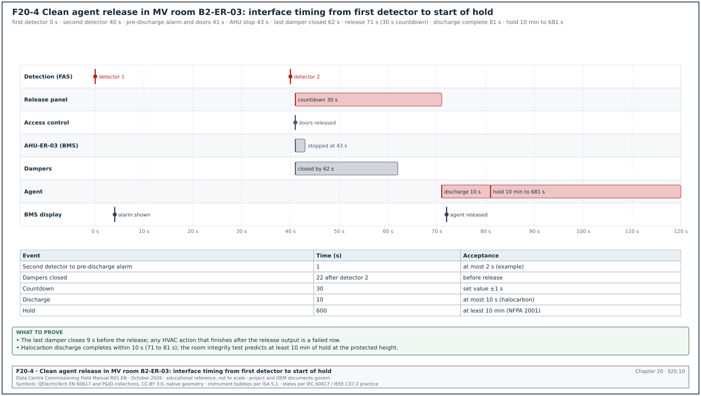
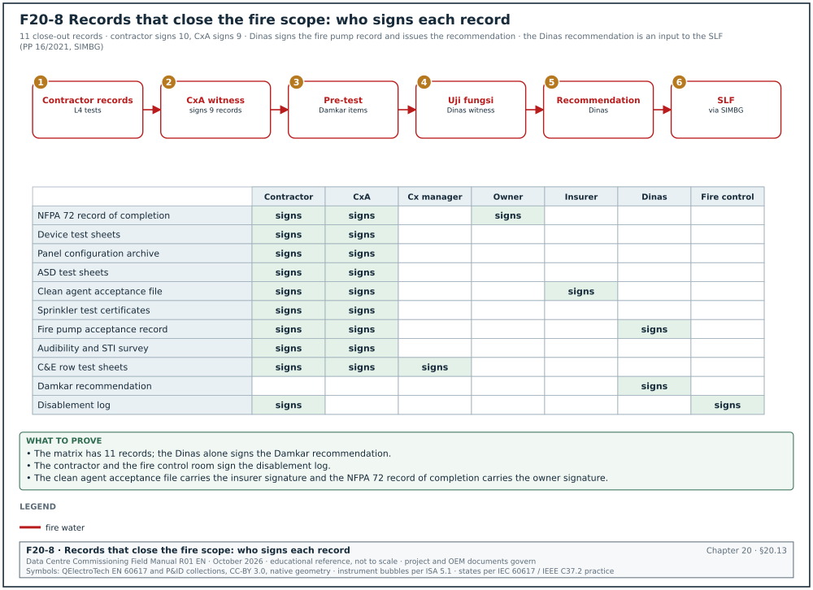

20.0Scope of this chapter
This chapter covers the fire protection and life-safety systems of a data-centre building and the way they act on the other building systems. The central document is the cause-and-effect (C&E) matrix. For each fire alarm input, it states which outputs the fire alarm system and the interfaced systems must produce, in what order and within what time. The chapter gives the tests for each system with the instrument, set-up, applied value, duration, acceptance value and source, and the filled records.
- Systems and codes. The fire protection systems of a data centre and the codes that apply on a campus in Jakarta. The codes are NFPA 72, NFPA 75, NFPA 76, NFPA 2001, NFPA 13, NFPA 20, NFPA 25, FM Global data sheets, Permen PU 26/PRT/M/2008 and the Indonesian national standard (Standar Nasional Indonesia, SNI) fire codes.
- Fire alarm system. Architecture, panels, loops, devices and power supplies.
- Initiating device tests. Smoke, heat, flame, duct, manual call point, waterflow and supervisory devices, using the NFPA 72 test methods.
- Aspirating smoke detection. Very early smoke detection apparatus (VESDA) design, transport time, hole sensitivity, alarm levels and tests.
- Notification. Sounders, strobes, voice evacuation, audibility and intelligibility.
- Clean agent suppression. Design concentration, agent quantity, discharge time, room integrity (door fan) test, hold time, and the release sequence.
- Pre-action sprinklers. Types, piping and instrumentation, trip test, water delivery time, air supervision.
- Fire pumps and fire water. NFPA 20 acceptance test and the MSC-1 fire water numbers.
- The cause-and-effect matrix. How it is built, a 34-row matrix for one building, and how every row is tested.
- Interfaces. Building management system (BMS), electrical power monitoring system (EPMS), heating, ventilation and air conditioning (HVAC), dampers, doors and access control, lifts, battery systems, fuel system and emergency power off (EPO), with the timing diagram.
- Integrated fire tests. Level 4 and Level 5 scenarios.
- Indonesian acceptance. The Dinas Pemadam Kebakaran (Damkar) functional test and the Sertifikat Laik Fungsi (SLF).
- Records, errors and the site checklist. The records that close the fire scope, the common errors, the key performance indicators (KPI) and the checklist for site use.
Documents and standards used: NFPA 72 (National Fire Alarm and Signaling Code), NFPA 75 (protection of information technology equipment), NFPA 76 (fire protection of telecommunications facilities), NFPA 2001 (clean agent fire extinguishing systems), NFPA 13 (installation of sprinkler systems), NFPA 20 (stationary fire pumps), NFPA 25 (inspection, testing and maintenance of water-based systems), and NFPA 855 (energy storage). The other fire documents are FM Global Property Loss Prevention Data Sheet 5-32 (data centres and related facilities), UL 864 (control units for fire signalling systems), UL 268 and EN 54-20 (smoke detectors and aspirating detectors). The Indonesian documents are Permen PU No. 26/PRT/M/2008 (Persyaratan Teknis Sistem Proteksi Kebakaran pada Bangunan Gedung dan Lingkungan), SNI 03-3985-2000 (fire detection and alarm systems), SNI 03-3989-2000 (automatic sprinkler systems), SNI 03-1745-2000 (standpipe and hose systems) and Pd-T-11-2005-C (building fire safety inspection guide). The chapter also uses the Xtralis VESDA design and commissioning documents.
20.1Fire protection systems on a data-centre campus
20.1.1What each system does
A data centre has a high value of equipment in a small space, high electrical loads that can start a fire, and an operation that must keep running. The fire strategy has three parts. Very early detection lets the operators find a smouldering component before it becomes a fire. Suppression must not damage the information technology (IT) equipment more than the fire would. Life safety protects the people in the building.
| System | Purpose | Typical location on MSC-1 | Main code |
|---|---|---|---|
| Addressable fire alarm system (FAS) | detection, alarm, control of interfaces | whole building | NFPA 72, SNI 03-3985-2000 |
| Aspirating smoke detection (ASD, for example VESDA) | very early warning of smoke | data halls, electrical rooms, uninterruptible power supply (UPS) and battery rooms | NFPA 76, NFPA 72, EN 54-20 |
| Pre-action sprinklers | water suppression with protection against accidental discharge | data halls | NFPA 13, NFPA 25, FM DS 5-32 |
| Clean agent gas suppression | suppression without water | medium-voltage (MV) and low-voltage (LV) electrical rooms, some UPS rooms | NFPA 2001 |
| Wet sprinklers | water suppression | offices, corridors, loading docks, generator halls (or water mist) | NFPA 13 |
| Voice evacuation (emergency voice alarm communication) | instructions to occupants | whole building | NFPA 72 Chapter 24 |
| Fire pumps and fire water tanks | water supply for sprinklers and hydrants | central fire pump house | NFPA 20, SNI 03-1745-2000 |
| Hydrants and hose reels | manual fire attack by the fire brigade and trained staff | site and building | SNI 03-1745-2000, Permen PU 26/2008 |
| Smoke control (stair pressurisation, smoke exhaust) | keep escape routes clear of smoke | stairs, lobbies, corridors | Permen PU 26/2008, NFPA 92 |
| Off-gas detection for lithium-ion batteries | detect electrolyte vent gas before thermal runaway | lithium-ion battery rooms | NFPA 855, UL 9540A results |
20.1.2MSC-1 fire water numbers
In the MSC-1 worked example, the fire water storage is 360 m³, the design fire flow is 90 L/s and the design duration is 60 minutes. The raw water tank holds 175 m³.
Worked example: Fire water volume check. The design fire flow for 60 minutes is 90 L/s × 3,600 s = 324,000 L = 324 m³. The storage of 360 m³ leaves 36 m³, which is 11 % above the design demand. The commissioning manager asks the fire protection engineer to confirm whether the 324 m³ includes the hose stream allowance. If the hose allowance is separate, the commissioning manager checks the stored volume again against the sum.
20.1.3Who does what
| Role | Responsibility in fire commissioning |
|---|---|
| Fire protection engineer of record (EoR) | design, C&E matrix, calculations, acceptance criteria |
| Fire alarm contractor | installation, programming, device tests, panel network |
| Suppression contractor (gas and sprinklers) | installation, pressure tests, door fan tests, trip tests |
| BMS, access control and lift contractors | interface inputs and outputs, response to fire signals |
| Commissioning authority (CxA) | witness of tests, integrated test scripts, issue log |
| Commissioning manager | programme, C&E matrix testing plan, coordination of all interfaced contractors, the integrated test |
| Owner's insurer (for example FM Global) | design review and witness where the insurance requires it |
| Authority having jurisdiction (AHJ), here the Dinas Pemadam Kebakaran | functional test witness and recommendation |
20.2Fire alarm system architecture


20.2.1Components
Figure F20-1 shows the fire alarm system of one MSC-1 building.
- Fire alarm control panels (FACP). One panel per building zone or floor, networked to a main panel at the fire control room. The panels are listed to UL 864 (or EN 54-2 for European panels) and run the C&E logic.
- Signalling line circuits (SLC). Addressable loops that connect detectors, call points and modules. Each loop is wired Class A (a ring with both ends at the panel) or Class X (Class A with short-circuit isolators) so that one open circuit does not stop the loop.
- Initiating devices. Smoke detectors, heat detectors, flame detectors, manual call points, duct detectors, waterflow and supervisory switches.
- Interface modules. Input modules (monitor a contact from another system) and output modules (relays that act on another system). An output module for an emergency control function sits within 1 m (3 ft) of the component it controls (NFPA 72 21.2.4 in the editions before 2025). NFPA 72-2025 21.2.4.1 permits up to 6 m (20 ft) where the conductors run in metal raceway or metal-armoured cable, and sets no distance limit for a Class D (fail-safe) circuit. The project applies the edition adopted by the AHJ.
- Notification appliance circuits (NAC). Sounders, strobes and loudspeakers, supplied from the panel or from NAC power extenders.
- Graphics workstation. A computer with the building floor plans showing each device, used by the fire control room operator.
- High-level interface to the BMS. A read-only gateway (for example BACnet or Modbus) that sends fire events to the BMS for display. Life-safety actions never depend on this gateway; they use hardwired or listed interfaces.
20.2.2Circuit classes and survivability
| Item | Requirement | Commissioning check |
|---|---|---|
| SLC class | Class A or Class X per the design | open one loop conductor; all devices still report; fault shown at the panel |
| Short-circuit isolators | one per group of devices as designed (for example every 20 devices or per zone) | short the loop between two isolators; only the devices between those isolators are lost |
| Pathway survivability | fire-rated cable or protected routes for circuits that must survive a fire (voice evacuation, panel network) | check cable type and route against the design and the survivability level |
| Earth fault detection | the panel detects an earth fault on any circuit | apply an earth to one conductor; trouble signal shown within 200 s (NFPA 72-2025 10.15.1; the source quotes NFPA 72-2010 10.17.1.2) |
20.2.3Secondary power (batteries)
Purpose: Prove that the panel batteries carry the system for the required standby time and then the alarm load.
Acceptance: NFPA 72 requires secondary power for 24 hours of standby followed by 5 minutes of alarm. An emergency voice/alarm communication system needs 15 minutes of operation at full load after the 24 hours (NFPA 72-2025 10.6.7.2.1 to 10.6.7.2.4; the source quotes NFPA 72-2002 4.4.1.5.3.1). Since NFPA 72-2010, the battery calculation must include a 20 % safety margin on the calculated ampere-hours. Where the local standard states a longer duration, the longer duration governs (confirm the standby duration against the secondary power clause of SNI 03-3985-2000).
Worked example: Battery calculation for panel B2-FACP-03. The measured standby current of the panel and its loops is 2.80 A. The measured alarm current with all NACs active is 9.60 A. The battery capacity needed is (2.80 A × 24 h + 9.60 A × 5/60 h) × 1.20 = (67.2 + 0.8) × 1.20 = 81.6 Ah. The installed batteries are 2 × 12 V 100 Ah in series, which passes. During the test, the commissioning manager also measures the currents. The design sheet shows a calculated standby current of 2.10 A against a measured 2.80 A, so devices were added after the design. The calculation is updated with the measured value.
20.2.4Panel programming record
| Field | Type | Example value |
|---|---|---|
| Panel tag and address | text | B2-FACP-03, network node 3 |
| Firmware and configuration file version | text | firmware 5.2.1; config B2-FACP-03_v14 (example) |
| Loops and device count | numbers | 4 loops, 612 devices |
| C&E logic version | text | C&E matrix B2-FIRE-CE rev 6 |
| Time and date synchronised | yes or no | yes, network time protocol (NTP) via the fire network gateway |
| Alarm verification enabled on smoke detectors | yes or no, delay | yes, 30 s, offices only (not in data halls) |
| Positive alarm sequence | yes or no | no |
| Checksum or version code of the configuration | text | 0x6F2A (example) |
The configuration file version is checked on the day of every witness test. A configuration file changed after the test without a retest is a common cause of later failures.
20.3Initiating device tests (NFPA 72)
20.3.1Acceptance test rule
At acceptance, every initiating device, every notification appliance and every interface is tested. The result is recorded in the NFPA 72 record of completion and the device test sheets (NFPA 72-2025 14.4.3.2 sets the test methods in Table 14.4.3.2). A sample test is not accepted at acceptance.
20.3.2Test methods by device
| Device | Test method (NFPA 72 practice) | Instrument | Acceptance | Record fields |
|---|---|---|---|---|
| Point smoke detector | apply listed test aerosol or smoke from a test kit at the detector | smoke test pole and canister listed by the detector manufacturer | panel shows alarm at the correct address and text; LED on the detector lights | address, location, time to alarm, pass or fail |
| Smoke detector sensitivity | read the sensitivity from the panel (listed sensitivity reporting) or test with a calibrated sensitivity tester | panel report or calibrated tester | within the listed sensitivity range on the detector label | address, measured value, range |
| Heat detector, restorable | apply heat from a listed heat source | heat gun or cordless heat tester | alarm at the rated temperature or rate of rise | address, time to alarm |
| Heat detector, non-restorable (fixed temperature link) | mechanical or electrical test of the circuit; do not heat the element | multimeter | circuit monitored and alarm on test | address, method |
| Flame detector | test lamp listed for the detector | manufacturer's test lamp | alarm within the manufacturer's time at the stated distance | address, distance, time |
| Duct smoke detector | test aerosol into the sampling tube; check airflow through the housing | manometer for the pressure difference across the sampling tubes | alarm; pressure difference within the manufacturer's range | address, pressure difference, air velocity in duct |
| Manual call point | operate with the test key or break the element | test key | alarm at correct address | address |
| Waterflow switch | open the inspector's test valve | stopwatch | alarm within 90 s of flow (NFPA 72-2025 17.15.2; NFPA 13-2025 section 7.7 covers waterflow alarm devices) | address, delay setting, time |
| Valve supervisory (tamper) switch | turn the valve | — | supervisory signal within two revolutions of the handwheel or one-fifth of the travel (NFPA 72-2025 17.19.1.2; NFPA 25 13.3.3.1) | address, turns |
| Low air pressure switch (pre-action) | bleed the air | test gauge | supervisory at the set pressure | address, set and measured pressure |
| Input module (monitored contact) | operate the monitored contact | — | correct event type at the panel | address, source device |
| Output module (control relay) | operate the C&E input that drives it | multimeter at the controlled equipment | equipment responds as in the C&E matrix | address, controlled equipment, response time |
20.3.3Device test procedure
Steps:
- Notify. The fire alarm contractor notifies the fire control room and the monitoring station that the system is under test. The contractor isolates outputs that must not operate (for example the clean agent release and the pre-action solenoid) with the panel's disablement function. Every disablement is written on the disablement log.
- Test each device. Two technicians work as a pair: one at the device, one at the panel or on a radio. Each device is tested by the method in 20.3.2.
- Read at the panel. The panel technician records the address, the text and the time.
- Reset. The device technician resets the device, and the panel technician confirms on the device test sheet that the panel returns to normal.
- Restore. At the end of the session, every disablement is restored and the disablement log is closed with a signature.
Acceptance: Each device alarms at the correct address with the correct location text. No device is missing from the panel's device list. Every disablement is restored at the end of the session.
Worked example: Device test rate and programme. Building B2 has 4,850 addressable devices. A test pair tests about 40 point detectors per hour in a 4 m high hall, including access with a test pole. Above a raised floor or in ceiling voids with access panels, the rate is about 12 per hour. With 3,900 open-area devices and 950 void devices: 3,900 / 40 + 950 / 12 = 97.5 + 79.2 = 176.7 pair-hours. With three pairs working 7 productive hours per day, the test takes 176.7 / (3 × 7) = 8.4 working days, plus 2 days for retests.
20.3.4Smoke detector sensitivity
NFPA 72 requires the sensitivity of smoke detectors to be checked within 1 year after installation and every alternate year after that. After two tests within the listed range, the interval may be extended to a maximum of 5 years where records are kept. The requirement is in the inspection and testing clauses of NFPA 72 Chapter 14; the clause number changes between editions. Addressable detectors with listed sensitivity reporting meet this through the panel report.
- Acceptance baseline. At acceptance, print the panel sensitivity report for every detector. This is the baseline.
- Out of range. A detector outside its listed range is cleaned or replaced and its new reading recorded.
- Construction dust. Detectors installed during construction collect dust and drift towards alarm. Detectors with dust covers keep them on until the area is clean, and the sensitivity report is printed after the covers are removed.
20.4Aspirating smoke detection (VESDA)


20.4.1How aspirating detection works
An aspirating smoke detector (ASD) draws air through a network of pipes with small sampling holes. A fan in the detector pulls the air to a laser or light-emitting diode (LED) chamber that measures smoke in % obscuration per metre (or per foot). The detector samples many holes at once. Smoke from one hole is diluted by clean air from the other holes, and the sensitivity at one hole is lower than the detector sensitivity.
| Term | Meaning | What to record |
|---|---|---|
| Detector sensitivity | smoke level at the detector that triggers an alarm level (for example Fire 1) | the threshold of each alarm level in the ASD test record |
| Hole sensitivity | smoke level at one hole that triggers the alarm when the other holes draw clean air; approximately detector sensitivity × number of holes (calculated by the design software, for example Xtralis ASPIRE) | the ASPIRE value for each pipe, compared with the code limit |
| Transport time | time for smoke entering the furthest hole to reach the detector | predicted and measured time for each pipe |
| Alarm levels | VESDA uses Alert, Action, Fire 1 and Fire 2 | the C&E outputs seen at each level |
| Flow | air flow through the detector; the detector monitors high and low flow faults | normalised flow per pipe and the fault thresholds |
20.4.2Code requirements for data centres
| Requirement | Value | Source |
|---|---|---|
| Very early warning fire detection (VEWFD): maximum transport time | 60 s | NFPA 76 (Syscom summary; confirm against the VEWFD clause of NFPA 76-2024) |
| Early warning fire detection (EWFD): maximum transport time | 90 s | NFPA 76 (Syscom summary; confirm against the EWFD clause of NFPA 76-2024) |
| VEWFD hole sensitivity | ≤ 1.0 % obscuration per foot (about 3.3 % per metre) | NFPA 76, quoted in the Xtralis VESDA-E FAQ (question 10) |
| EWFD hole sensitivity | ≤ 1.5 % per foot | NFPA 76, quoted in the Xtralis VESDA-E FAQ (question 10) |
| General ASD maximum transport time | 120 s | UL 268 6th edition, quoted by Xtralis; UL 268 7th edition sets a limit per listed product (90 s for VESDA-E) |
| EN 54-20 sensitivity classes | Class A (very high), B (enhanced), C (normal) | EN 54-20 |
20.4.3ASD commissioning procedure
Inputs: the ASPIRE (or equal) design report with predicted transport time, hole sensitivity and flow per pipe; the installed pipe drawings; the alarm level settings.
Steps:
- Pipe inspection. Check the pipe routes, hole positions, hole sizes, end caps, labels at each hole ("aspirating smoke detector sampling point, do not obstruct") and the support spacing against the design.
- Pipe tightness. Cap all holes on a pipe with tape and run the detector; the flow falls to near zero. A flow that stays high shows a leak or an open joint. Remove the tape after the test.
- Flow normalisation. With the pipes complete and clean, run the detector's flow normalisation. Record the normalised flow per pipe. Acceptance: within ±20 % of the ASPIRE predicted flow (example project tolerance; the project value comes from the detector manufacturer's commissioning guide).
- Flow fault test. Block the end hole or a group of holes until the low flow fault appears. Break a pipe joint until the high flow fault appears. Record the flow at fault.
- Transport time test. At the furthest hole of each pipe, introduce smoke (a smoke pen or cotton wick) and start the timer. Stop when the detector's smoke level rises. Acceptance: measured time ≤ the code limit (60 s for VEWFD) and close to the ASPIRE prediction.
- Alarm level test. Introduce smoke at a hole until each alarm level (Alert, Action, Fire 1, Fire 2) operates; check each level at the panel with the correct text and the C&E outputs.
- Settings record. Record the alarm thresholds, delays, flow fault thresholds and the referencing (if used).
Worked example: Hole sensitivity and transport time for VESDA detector B2-DH3-ASD-02 (Figure F20-5) with 4 pipes and 20 holes per pipe (80 holes in total). The detector Fire 1 threshold is 0.0125 % per foot. The approximate hole sensitivity is 0.0125 × 80 = 1.0 % per foot, equal to the VEWFD limit; the ASPIRE report gives 0.98 % per foot, which passes. The ASPIRE predicted transport time for pipe 3 is 52 s; the measured time is 49 s at the end hole, within 60 s. Pipe 4 measures 71 s against a prediction of 55 s; the technician finds an end cap with a hole drilled larger than the design. After the cap is replaced, the time is 54 s.
20.4.4ASD test record fields
| Field | Type | Example value |
|---|---|---|
| Detector tag, model | text | B2-DH3-ASD-02, VESDA-E VEU (example) |
| Pipe number | number | 3 |
| Holes per pipe, hole diameter | numbers | 20, 3.0 mm (end cap 4.0 mm) |
| Predicted flow / normalised flow | numbers (L/min) | 46 / 44 |
| Predicted / measured transport time | numbers (s) | 52 / 49 |
| Alert / Action / Fire 1 / Fire 2 thresholds | numbers (% obs/ft) | 0.004 / 0.008 / 0.0125 / 0.02 (example) |
| Low and high flow fault thresholds | numbers (%) | −20 % / +20 % (example) |
| C&E outputs observed at Fire 1 and Fire 2 | text | per C&E rows 3 and 4 |
| Signatures | names | fire alarm contractor, CxA |
20.5Notification: sounders, strobes and voice evacuation
20.5.1Audibility
- Ambient level. Measure the average ambient sound level in each area with the building in normal operation (data halls at full fan speed reach about 75 to 85 dBA).
- Alarm level. With all notification appliances on, measure the alarm level at 1.5 m above the floor at the worst positions. Use a sound level meter IEC 61672 Class 1 (or Class 2 where the project accepts it) with A-weighting and the fast or slow response stated in the procedure.
- Acceptance (public mode). The alarm level is at least 15 dB above the average ambient sound level, or 5 dB above the maximum sound level that lasts at least 60 s, whichever is greater. It is measured 1.5 m above the floor with A-weighting (NFPA 72-2025 18.4.4.1). The total sound level stays at or below 110 dBA at the minimum hearing distance (NFPA 72-2025 18.4.1.2). Private mode is used, for example, in plant rooms where only staff are present. It needs at least 10 dB above the average ambient level, or 5 dB above the maximum level lasting at least 60 s, whichever is greater (NFPA 72-2025 18.4.5.1).
Worked example: Data hall B2-DH3 with all computer room air handler (CRAH) units and fan walls running has an average ambient level of 78 dBA. The required alarm level is 78 + 15 = 93 dBA. The measured levels at 20 grid points range from 91 to 98 dBA; three points near the hot-aisle containment doors read 91 to 92 dBA. The fire alarm contractor adds two sounders inside the containment and the retest gives 94 to 99 dBA. Where 15 dB above ambient would exceed 110 dBA, visual notification appliances carry the signal in that area.
20.5.2Visual notification
- Coverage. Strobes cover the areas where the ambient noise is high or where hearing-impaired occupants may be, with the candela ratings and spacing in the design (NFPA 72 Chapter 18 tables).
- Synchronisation. Strobes in the same field of view flash in synchrony. Check visually and with a video at 60 frames per second.
- Hall layout. In data halls the rack rows block the view, so each aisle needs its own strobes.
20.5.3Voice evacuation intelligibility
Inputs: a speech transmission index (STI) meter that uses the STI for public address (STIPA) method (IEC 60268-16), with the STIPA test signal played through the voice evacuation system.
Steps:
- Divide into acoustically distinguishable spaces (ADS). Each room or area with its own acoustic conditions is one ADS.
- Measure. In each ADS, measure STIPA at a grid of points at 1.5 m height, with the normal ambient noise present. Use, for example, one point per 40 m² up to the limit in the procedure.
- Acceptance. The average STI in each ADS and the proportion of points above the minimum meet the project value. NFPA 72 Annex D (2010 and later editions) recommends that 90 % of the measurement points in an ADS meet the required score. With the STIPA method, the usual targets are STI ≥ 0.50 average and STI ≥ 0.45 at each point. Annex D is advisory, so the project specification states whether these targets are pass or fail criteria.
20.6Clean agent gas suppression (NFPA 2001)
20.6.1System description
A clean agent system stores an extinguishing gas in cylinders and discharges it through pipes and nozzles to fill the protected room to a design concentration. The agent extinguishes the fire and leaves no residue on the equipment. Two families are used:
| Family | Example agents | How they act | Discharge time (NFPA 2001) | Room effect |
|---|---|---|---|---|
| Halocarbon | FK-5-1-12 (for example 3M Novec 1230, now from other producers), HFC-227ea (FM-200) | absorb heat and interrupt the combustion | ≤ 10 s to 95 % of the minimum design concentration | small pressure change; needs pressure relief vent |
| Inert gas | IG-541, IG-55, IG-100 (nitrogen) | lower the oxygen concentration | ≤ 60 s for class B, ≤ 120 s for class A and C to 95 % of the minimum design concentration (NFPA 2001; the 120 s value for class A and C has applied since the 2012 edition) | large positive pressure; needs a pressure relief vent sized for the flow |
20.6.2Design concentration and agent quantity
- Minimum extinguishing concentration (MEC). Found by the cup-burner test (class B) or the room fire test (class A).
- Minimum design concentration. MEC × safety factor: 1.2 for class A surface fires, 1.3 for class B (NFPA 2001; the 1.2 class A factor is in the note to Table A.7.2.2.3(b) quoted in the public input report for NFPA 2001-2025; confirm the class B and class C factors in the minimum design concentration clause, 7.2.2.3, of NFPA 2001-2025).
- Safety limit. The design concentration in an occupied room stays at or below the no observed adverse effect level (NOAEL) or within the time limits of NFPA 2001. The NOAEL is 10 % for FK-5-1-12 and 9 % for HFC-227ea (agent manufacturer data sheets).
- Agent quantity for halocarbons. W = (V / S) × C / (100 − C). W is the agent mass in kg and V the protected volume in m³. S is the specific vapour volume in m³/kg at the room temperature (S = k1 + k2 × T), and C is the design concentration in % by volume.
Worked example: MV switchroom B2-ER-03, 20.0 m × 8.0 m × 4.0 m = 640 m³ net volume, design temperature 20 °C, agent FK-5-1-12 at a design concentration of 4.5 %. For FK-5-1-12, k1 = 0.0664 and k2 = 0.000274 (NFPA 2001 and manufacturer data; the agent manufacturer's design manual gives the values for the agent). S = 0.0664 + 0.000274 × 20 = 0.07188 m³/kg. W = (640 / 0.07188) × 4.5 / 95.5 = 8,904 × 0.04712 = 419.5 kg. The design calculation sheet shows 420 kg in 4 cylinders of 105 kg; the commissioning manager checks the weight of each cylinder against its fill certificate (20.6.5).
20.6.3Room integrity test (door fan test)
Purpose: Prove that the room is tight enough to hold the agent concentration at the protected height for the hold time. NFPA 2001 requires the concentration at the highest level of protected equipment to stay at or above 85 % of the adjusted minimum design concentration for at least 10 minutes. A longer time applies where the project specification or the AHJ sets one. NFPA 2001 Annex C gives the door fan method that predicts this hold time.
Inputs: a door fan test kit (for example Retrotec) with a calibrated fan in an adjustable door panel. The kit includes a digital manometer with ±1 % accuracy or ±0.15 Pa and the NFPA 2001 Annex C calculation software. The kit is calibrated within the kit manufacturer's interval.
- Room ready. All walls, ceilings, floors, penetrations and doors are complete; HVAC dampers that close on agent release are closed; HVAC units that stop on release are stopped.
- Door fan. The fan panel is fitted in a door opening to an adjoining space with a large volume.
- Measure the room data. Room volume, protected height (top of the highest equipment), room height, agent and design concentration, and the static pressure difference across the boundary before the test.
Steps:
- Pressurise and depressurise. The fan pressurises and depressurises the room at several pressure differences (for example 10 to 60 Pa) and records the flow at each.
- Leakage area. The software calculates the equivalent leakage area (ELA) and splits it into upper and lower leakage (with a measured or assumed split).
- Predicted hold time. The software predicts the time for the agent-air interface to descend to the protected height (for a halocarbon) or for the concentration to fall to the minimum.
- Leak search. If the predicted time is below 10 minutes, the testers find the leaks with a smoke pencil while the room is depressurised. The contractor seals them, and the test is repeated.
Acceptance: Predicted hold time ≥ 10 minutes at the protected height (or the project value).
Worked example: Room B2-ER-03 (640 m³, room height 4.0 m, protected height 2.4 m, FK-5-1-12 at 4.5 %). The first test gives an ELA of 0.071 m² and a predicted hold time of 7.2 minutes, which fails. The leak search finds an unsealed cable tray penetration through the wall above the ceiling line and gaps around two fire damper frames. After sealing, the ELA is 0.038 m² and the predicted hold time is 13.6 minutes, which passes.
20.6.4Room integrity test record fields
Figure F20-6 shows the door fan set-up for room B2-ER-03 and the two results of the worked example. The predicted hold time is 7.2 minutes before sealing and 13.6 minutes after sealing, against the 10-minute limit.


| Field | Type | Example value |
|---|---|---|
| Room | text | B2-ER-03 MV switchroom |
| Net volume, room height, protected height | numbers | 640 m³, 4.0 m, 2.4 m |
| Agent, design concentration, minimum concentration at hold | text, numbers | FK-5-1-12, 4.5 %, 85 % of minimum design |
| Door fan kit and calibration date | text | kit SN RT-2209, calibrated 2026-06-20 |
| Static pressure before test | number (Pa) | 0.8 |
| ELA, first test | number (m²) | 0.071 |
| Predicted hold time, first test | number (min) | 7.2 |
| Leaks found and sealed | list | cable tray penetration grid C4; damper frames FD-03-02 and FD-03-05 |
| ELA and hold time, retest | numbers | 0.038 m², 13.6 min |
| Pressure relief vent check | text | vent opens at design pressure; free area as designed |
| Signatures | names | suppression contractor, CxA, insurer witness |
20.6.5Clean agent system checks before arming
- Pipe pressure test. Closed sections of pipe are tested per NFPA 2001 (pneumatic test at the pressure stated in the standard; confirm the pressure and the hold time in the closed-section pipe test clause of NFPA 2001-2025 chapter 10; a 2023 public input asking for a hydrostatic test in that clause was rejected) and open-ended pipe is blown through with nitrogen or air to prove no obstruction.
- Cylinder weights and pressures. Each cylinder's weight and pressure (corrected for temperature with the manufacturer's chart) is recorded against the fill certificate. For halocarbon agents, accept an agent loss ≤ 5 % or a pressure loss (temperature corrected) ≤ 10 % (NFPA 2001 11.3.1, unchanged in the 2025 edition cycle). For inert gas agents, accept a pressure loss (temperature corrected) ≤ 5 % (NFPA 2001-2025 11.3.4).
- Nozzles. Nozzle type, orifice code and position match the hydraulic calculation.
- Release devices. Solenoid or actuator on the pilot cylinder; tested with the actuator removed from the valve (or with a test device), never by discharging the cylinder.
- Abort switch. Where provided, the abort switch is of the "dead-man" type (it holds only while pressed) and the C&E defines what it does.
- Manual release. Manual release stations at the exit doors, with covers.
- Lock-out valve. A lock-out valve or a disconnect on the release circuit lets maintenance staff work in the room safely; its closed position gives a supervisory signal.
- Warning signs. Signs at every entrance with the agent name and the instruction not to enter after discharge.
- Pressure relief vent. Fitted, free area as designed, opens at the design pressure (manufacturer test or certificate).
20.6.6Release sequence test (with actuators removed)
Steps:
- Safe the system. The suppression contractor removes the actuators from the cylinder valves and connects each actuator to a test load or keeps it in a visible position. The contractor then confirms with the CxA that no cylinder can discharge.
- First detector. Operate one detector in the room. Acceptance: first-stage alarm in the room and at the panel; outputs per the C&E row.
- Second detector. Operate a second detector in the other detection zone (coincidence or "double knock"). Acceptance: pre-discharge alarm (distinct tone and visual), HVAC shutdown, dampers closed, doors released, countdown starts.
- Countdown. The countdown time is measured with a stopwatch from the second detector to the release output. Acceptance: within ±1 s of the set value (example 30 s).
- Release output. The actuator operates at the end of the countdown. The discharge pressure switch input is simulated to show "agent released" at the panel and the BMS.
- Abort test. Repeat with the abort switch held during the countdown; the countdown stops (or resets per the C&E) and the release does not occur while the switch is held.
- Manual release. Operate the manual release station; the release follows the C&E (for example a short delay or none).
- Lock-out. Close the lock-out valve or the release disconnect; the panel shows supervisory and the release output does not reach the actuator.
- Reinstate. Reconnect the actuators with the CxA present and record the time the system is armed.
20.7Pre-action sprinkler systems


20.7.1Types of pre-action system
| Type | Valve opens when | Water enters the pipe when | Use |
|---|---|---|---|
| Non-interlock | detection or sprinkler operation | either event | rare in data halls |
| Single interlock | detection operates | detection; water then waits at closed sprinklers | data halls where early filling is accepted |
| Double interlock | detection and loss of pipe air pressure (a sprinkler has opened) | both events | data halls where accidental water in the pipes must be avoided |
FM Global Data Sheet 5-32 and the owner's insurance requirements decide the type on most hyperscale projects; the decision is recorded in the basis of design (BOD).
20.7.2Pre-action valve set
Figure F20-3 shows the pre-action valve set and its instruments.
| Component | Function | Commissioning check |
|---|---|---|
| Main control valve (outside screw and yoke (OS&Y) gate or butterfly) with tamper switch | isolates the system | supervisory signal on closing |
| Pre-action (deluge) valve with solenoid release | holds back the water until released | trip test |
| Priming water and check valve | keeps the clapper sealed | level per manufacturer |
| Air or nitrogen supply with air maintenance device | keeps the pipe pressurised | supervisory pressure set points |
| Low air pressure switch | detects an opened sprinkler or a leak | supervisory at the low set point; part of the double interlock |
| Alarm pressure switch and waterflow switch | detect water flowing | alarm within the set delay |
| Inspector's test connection at the far end | simulates one sprinkler | water delivery time test |
| Main drain and pressure gauges | drain and readings | main drain test |
20.7.3Pipe pressure test
- Hydrostatic test. NFPA 13-2025 29.2.1.1 requires a hydrostatic test of new systems at 13.8 bar (200 psi), held without loss for 2 hours. Where the working pressure exceeds 10.3 bar (150 psi), the test pressure is 3.4 bar (50 psi) above the working pressure (29.2.1.3). A drop in gauge pressure or a visible leak is a loss (29.2.1.2). The gauge is at the lowest point of the section under test (29.2.1.6).
- Air test for pre-action and dry systems. The sprinkler contractor also runs an air test at 2.7 bar (40 psi) for 24 hours. A loss above 0.1 bar (1.5 psi) in the 24 hours is corrected and the test repeated. This is the NFPA 13 air leakage test, as quoted in local acceptance forms such as the Mercer Island 2022 NFPA 13 acceptance form.
- Drying. After the hydrostatic test, the pipe is drained and dried so that water left in the pipe does not cause corrosion or freeze. On hyperscale projects nitrogen often replaces compressed air as the supervisory gas, to limit corrosion.
20.7.4Trip test and water delivery time
Purpose: Prove that the valve opens on the designed signals and that water reaches the furthest sprinkler within the required time.
Steps:
- Notify. Notify the fire control room and the BMS operators; protect the equipment near the inspector's test outlet; place a drain hose to a safe point.
- Double interlock: detection only. Operate the detection (two detectors or the ASD Fire 2 per the C&E). The solenoid opens, but in a double-interlock system the valve stays shut while the pipe air pressure holds. Acceptance: no water in the pipe; panel shows "pre-action release, waiting for air loss".
- Double interlock: air loss only. Reset, then open the inspector's test valve without detection. Acceptance: low air supervisory alarm; valve stays shut.
- Both events. Operate the detection and open the inspector's test valve. Start the stopwatch at the opening of the test valve.
- Water delivery. Stop the stopwatch when a steady stream of water flows at the inspector's test connection. Acceptance: within the time required by NFPA 13 for the hazard (for a double-interlock system, NFPA 13 applies the dry-pipe water delivery rules; 60 s for light hazard and 50 s for ordinary hazard in NFPA 13-2025 Table 8.2.4.3.2, applied to double-interlock systems by 8.3.2.3.1.4; the design calculation may set a shorter time).
- Alarms. Record the time of the waterflow alarm and of the alarm at the BMS.
- Reset and drain. Close the valve, drain, reset the clapper, restore air pressure and record the time to restore normal air pressure. The air supply must restore normal pressure within 30 minutes (NFPA 13-2025 8.2.7.3; 8.3.2.5 applies the dry pipe air rules to pre-action systems).
Worked example: Pre-action system B2-DH3-PA-01, double interlock, ordinary hazard group 1, 1,680 L pipe volume, normal air pressure 2.4 bar. Detection operated at 10:02:00; the inspector's test valve was opened at 10:02:30. The low air alarm came at 10:02:41 and the clapper opened at 10:02:44. Steady water flowed at the inspector's test connection at 10:03:16, 46 s after the test valve opened, within the 50 s value for ordinary hazard. The waterflow alarm reached the panel at 10:03:05 and the BMS at 10:03:06.
20.7.5NFPA 25 routine tests that begin at handover
| Test | Interval (NFPA 25-2023 values, the edition read for this table; confirm each against NFPA 25-2026 Table 13.1.1.2) | First due on MSC-1 |
|---|---|---|
| Valve supervisory switches | semi-annual | 6 months after handover |
| Waterflow alarm devices | quarterly (vane type semi-annual) | 3 months |
| Pre-action valve partial trip with the main valve partly open | annual | 12 months |
| Pre-action full flow trip test | every 3 years | 36 months, the acceptance trip test sets the baseline |
| Main drain test | annual (quarterly where the supply is a single riser) | 12 months |
| Air compressor or nitrogen generator | per manufacturer, inspection quarterly | 3 months |
The acceptance trip test record (20.7.4) is the first baseline that the operations team compares against.
20.8Fire pumps and fire water supply
20.8.1Fire pump acceptance test (NFPA 20)
Purpose: Prove that the fire pump delivers its rated flow and pressure and that its controller starts it on demand.
Inputs:
- A calibrated flow meter, or a pitot tube with playpipes and hoses.
- Calibrated suction and discharge pressure gauges with an accuracy within 1 % of full scale.
- A tachometer, and a voltmeter and an ammeter for electric pumps.
Steps:
- Churn (no flow). Start the pump with the test valve closed. Record suction pressure, discharge pressure, speed and motor current.
- 100 % flow. Open the test valve to rated flow. Record the same values.
- 150 % flow. Open to 150 % of rated flow. Record the same values.
- Automatic start. Drop the system pressure with the drain; the pump starts at the pressure set point of the controller.
- Alternate power. For an electric pump with an alternate supply (generator), transfer the controller to the alternate supply while the pump runs at peak load.
- Alarms. The fire pump contractor simulates the pump running, power failure, phase reversal and controller trouble signals. The CxA records each signal at the fire alarm panel in the fire pump acceptance record.
Acceptance: The pump meets its certified curve within the tolerance accepted by the AHJ. At 150 % of rated flow the net pressure is at least 65 % of rated net pressure. Churn pressure does not exceed 140 % of rated net pressure; a higher churn pressure is accepted only where the components are rated for it. These are the NFPA 20 criteria for centrifugal fire pumps, as summarised by the American Society of Plumbing Engineers (ASPE).
Worked example: Fire pump B2-FP-01 rated 90 L/s at 8.0 bar net. At 150 % flow (135 L/s) the measured net pressure is 5.9 bar, which is 74 % of rated, above the 65 % minimum. Churn net pressure is 10.4 bar, which is 130 % of rated and below 140 %. The test passes, and the measured curve is plotted against the certified curve in the record.
20.9The cause-and-effect matrix


20.9.1What the matrix is and why it exists
The cause-and-effect matrix is a table with the fire alarm inputs as rows (the causes) and the outputs as columns (the effects). A mark at a crossing means that the input must produce that output. The matrix is the specification for the panel programming, for the interface wiring of every other system, and for the integrated fire test. On a data centre, the matrix decides whether a single smoke detector stops the cooling of a data hall. The owner's operations team reviews every row that acts on cooling or IT power (20.9.2, step 5).
20.9.2How the matrix is built
- Fire strategy. The fire protection EoR writes the fire strategy: zones, detection types, suppression per room, evacuation strategy, smoke control.
- Input list. Every input type per zone is listed: each alarm level of each detection system, each manual station, each waterflow and supervisory signal, each fault.
- Output list. Every output is listed with the owning system and the interface type (hardwired relay, listed interface, or a high-level read-only signal).
- Logic and timing. For each input, the outputs are marked, with delays, coincidence (two-detector) logic and any condition (for example "only if the room is in automatic mode").
- Owner and operations review. The owner's operations team reviews the effects on the IT load. For example, it decides whether a single VESDA Action in a data hall stops CRAH units (MSC-1: no). It also decides whether Fire 2 starts the pre-action release (MSC-1: yes, in coincidence with a second device).
- AHJ and insurer review. The local Damkar and the insurer review the life-safety actions.
- Issue for construction. The matrix is issued with a revision number. Every later change is a revision with the reason, and the panel configuration version is linked to the matrix revision.
20.9.3Output codes for the MSC-1 building matrix
| Code | Output | Owning system | Interface |
|---|---|---|---|
| O1 | Sounders and strobes in the fire zone | FAS | NAC |
| O2 | Voice evacuation, phased: alert message to the floor, evacuation message to the fire zone | FAS voice system | panel network |
| O3 | Signal to the fire control room and the monitoring station (and Damkar where connected) | FAS | panel network, dialler |
| O4 | Stop air handling units (AHU), CRAH units or fan walls serving the zone | BMS and unit controllers | hardwired relay from FAS output module |
| O5 | Close fire and smoke dampers serving the zone | FAS or damper control panel | hardwired |
| O6 | Release access-controlled doors on the escape route of the zone | access control | hardwired relay, fail-safe locks |
| O7 | Clean agent pre-discharge alarm and countdown (30 s) | agent release panel | panel logic |
| O8 | Clean agent release | agent release panel | actuator circuit |
| O9 | Pre-action solenoid release | FAS or release panel | release circuit |
| O10 | Lifts return to the designated floor and stop | lift controller | hardwired |
| O11 | Stair pressurisation fans start | FAS or smoke control panel | hardwired |
| O12 | Open lithium-ion battery rack contactors in the room | battery BMS | hardwired |
| O13 | Stop fuel transfer pumps to the affected generator room | fuel control panel | hardwired |
| O14 | Alarm or supervisory event to BMS and EPMS (display only) | gateway | high-level read-only |
20.9.4The 34-row matrix for building B2 (example)
Figure F20-7 groups the 34 rows by event class and shows which effects each class may produce. The rows are 2 pre-alarm, 16 single-device alarm, 4 coincidence, 2 release, 8 supervisory and 2 trouble rows. Row 31 (fire pump running) is counted as supervisory; the AHJ may require it as an alarm.


Rows are causes; the outputs column lists the effects by code; the logic column gives delays and conditions. Figure F20-2 shows the same matrix as a grid. The project's issued matrix governs.
| No. | Cause (input, zone) | Event class | Effects | Logic and timing |
|---|---|---|---|---|
| 1 | VESDA Alert, data hall B2-DH3 | pre-alarm | O14, local display at the fire control room | no evacuation; operator investigates within 5 min |
| 2 | VESDA Action, B2-DH3 | pre-alarm | O3, O14 | operator investigates; no plant stop |
| 3 | VESDA Fire 1, B2-DH3 | alarm | O1, O2 (alert), O3, O14 | first alarm stage; detection zone 1 of the coincidence |
| 4 | VESDA Fire 2, B2-DH3 | alarm | O1, O2 (evacuate DH3), O3, O6, O9, O10, O11, O14 | O9 releases the solenoid; water enters only on air loss (double interlock) |
| 5 | Point smoke detector, single, B2-DH3 | alarm | O1, O2 (alert), O3, O14 | one detector: alarm only |
| 6 | Two point smoke detectors, B2-DH3 (coincidence) | alarm | O1, O2 (evacuate DH3), O3, O6, O9, O10, O11, O14 | same effects as row 4 |
| 7 | Manual call point, B2-DH3 | alarm | O1, O2 (evacuate DH3), O3, O6, O10, O11, O14 | no suppression release from a call point |
| 8 | Pre-action waterflow switch, B2-DH3-PA-01 | alarm | O1, O2 (evacuate DH3), O3, O4 (DH3 zone units, after owner decision), O14 | 30 s retard on the waterflow switch (example) |
| 9 | Pre-action low air pressure, B2-DH3-PA-01 | supervisory | O3, O14 | no evacuation |
| 10 | Pre-action main valve closed (tamper), B2-DH3-PA-01 | supervisory | O3, O14 | no evacuation |
| 11 | Point smoke detector, single, MV room B2-ER-03 | alarm | O1, O3, O14 | first stage of the agent coincidence |
| 12 | Two detectors in different zones, B2-ER-03 | alarm | O1, O2 (evacuate ER-03), O3, O4, O5, O6, O7, O14 | O7 starts the 30 s countdown; O4 and O5 complete before the end of the countdown |
| 13 | End of countdown, B2-ER-03 | release | O8, O14 | release only if the abort switch is not held and the lock-out is open |
| 14 | Manual release station, B2-ER-03 | release | O1, O2, O3, O4, O5, O6, O7 (10 s), O8, O14 | short countdown of 10 s (example) |
| 15 | Abort switch held, B2-ER-03 | supervisory | O14, countdown held | release blocked while held; countdown restarts on release of the switch (example logic) |
| 16 | Agent discharge pressure switch, B2-ER-03 | alarm | O1, O2, O3, O14, "agent discharged, do not enter" lamps | confirms the discharge |
| 17 | Lock-out valve closed or release disconnected, B2-ER-03 | supervisory | O3, O14 | release blocked |
| 18 | Off-gas detector, lithium-ion battery room B2-BR-03 | alarm | O1, O3, O12, O14, room extract fan to high speed (BMS) | early warning of cell venting |
| 19 | Smoke detector, B2-BR-03 | alarm | O1, O2 (evacuate BR-03), O3, O6, O12, O14 | — |
| 20 | Two detectors, B2-BR-03 | alarm | O4, O5, O7, then O8 | clean agent room per rows 12 and 13 |
| 21 | Rate-of-rise heat detector, generator hall B2-GH | alarm | O1, O2 (evacuate GH), O3, O6, O13, O14 | generators keep running unless the operator stops them |
| 22 | Flame detector, generator hall B2-GH | alarm | O1, O2, O3, O6, O13, O14 | — |
| 23 | Sprinkler waterflow, generator hall B2-GH | alarm | O1, O2, O3, O13, O14 | — |
| 24 | Heat detector, fuel pump room B2-FPR | alarm | O1, O2, O3, O13, O14 | stops transfer to all day tanks in the building |
| 25 | Smoke detector, MV and LV switchroom without gas, B2-ER-01 | alarm | O1, O2, O3, O6, O14 | no electrical trip from detection |
| 26 | Duct smoke detector, office AHU B2-AHU-OF1 | alarm | O1 (office zone), O3, O4 (AHU-OF1), O5 (office dampers), O14 | — |
| 27 | Smoke detector, office corridor | alarm | O1, O2 (evacuate floor), O3, O6, O10, O11, O14 | — |
| 28 | Manual call point, office or corridor | alarm | O1, O2, O3, O6, O10, O11, O14 | — |
| 29 | Stair pressurisation fan failure | supervisory | O3, O14 | — |
| 30 | Sprinkler main control valve closed (tamper), any zone | supervisory | O3, O14 | — |
| 31 | Fire pump running | supervisory or alarm per AHJ | O3, O14 | — |
| 32 | Fire pump controller trouble or phase reversal | trouble | O3, O14 | — |
| 33 | Fire water tank low level | supervisory | O3, O14 | — |
| 34 | FACP mains failure, battery fault, earth fault or loop open circuit | trouble | O3, O14 | trouble buzzer at the panel |
Rows 4, 6, 12 and 20 are the rows with the largest operational consequence: they evacuate a room, release doors and either release a suppression system or prepare it. The owner's operations team signs these rows by name in the review record.
20.9.5Rules that the matrix follows on MSC-1
- No single device releases suppression. Gas and pre-action releases need two independent detections (coincidence) or a manual release.
- No automatic electrical trip of IT power. The matrix does not trip the UPS, the power distribution units (PDUs) or the rack power on detection. Where an emergency power off (EPO) is required for an IT room, it is a manual station at the exit, with a cover and a label. NFPA 70 Article 645 is optional. A design may use Article 645 to gain its wiring allowances under raised floors. Such a design must provide the 645.10 disconnecting means for the IT equipment and the room HVAC, with remote disconnect controls at the principal exit doors. Article 645.10(B) permits a different arrangement for a critical operations data system under the conditions listed there. A design that follows NFPA 70 Chapters 1 to 4 only, without Article 645, needs no EPO under NFPA 70. The EoR records the chosen route in the BOD and the AHJ accepts it.
- Cooling stays on in data halls for pre-alarms. VESDA Alert and Action do not stop cooling. Whether Fire 2 stops CRAH units in a pre-action hall is an owner decision with the EoR and the insurer, recorded in the BOD.
- Gas rooms stop their HVAC before release. HVAC that would dilute the agent stops and its dampers close before the end of the countdown.
- Doors fail safe. Access-controlled doors on escape routes release on fire alarm and on loss of power to the lock.
- Generators keep running. A fire alarm elsewhere in the building does not stop the generators. A fire in a generator hall stops the fuel transfer to that hall (rows 21 to 24). The operator decides whether to stop the engines.
- BMS and EPMS display only. The high-level interface is read-only. No life-safety action depends on it.
20.9.6Testing the matrix row by row
Purpose: Prove that every cause produces every marked effect, and no unmarked effect, within the stated time.
Owner: Commissioning manager, with the fire alarm contractor at the panel and one representative of each interfaced system at the controlled equipment.
Steps:
- Prepare the row sheets. For each row of the matrix, one test sheet lists the cause, every effect, the expected time, the position where each effect is observed and the observer's name. Time limit: issued 5 working days before the test.
- Brief the observers. Each observer stands at an effect (for example the CRAH controller, the damper, the door, the lift, the battery BMS screen) with a radio and a synchronised watch.
- Make safe. The suppression contractor removes the actuators (20.6.6). The sprinkler contractor closes the pre-action main valve or puts a test load on the release circuit. Lifts are empty, and the operations team agrees the effect on live systems.
- Operate the cause. The fire alarm technician operates the input (real device where possible, simulation only where a real test is unsafe).
- Observe each effect. Each observer reports "effect seen" with the time. The panel log gives the time of the cause.
- Check the unmarked effects. Observers at outputs that are not marked for this row report that nothing happened (for example the CRAH units in an adjoining hall keep running).
- Reset. Reset the panel and every effect; record that each system returned to normal (for example CRAH restart time after the stop is released).
- Record. The row sheet is signed by the commissioning manager and the fire alarm contractor. A failed effect is raised in the issue log with the row number.
Acceptance: All marked effects occur within the time in the matrix. For example, dampers close within 30 s of the coincidence alarm, doors release within 2 s, and lifts reach the designated floor within the lift controller's travel time. No unmarked effect occurs, and all systems return to normal after reset.
Worked example: Test of row 12 in room B2-ER-03. The second detector was operated at 14:20:00 (panel log). Observers reported: pre-discharge alarm 14:20:01, AHU-ER-03 stopped 14:20:03, damper FD-03-02 closed 14:20:19, damper FD-03-05 closed 14:20:22, doors released 14:20:01, countdown start 14:20:01 and release output (test lamp) at 14:20:31. The countdown was 30 s and the last damper closed 9 s before the release. The BMS showed the agent alarm at 14:20:04. The CRAH units in the adjoining room B2-ER-04 kept running, as the matrix requires.
20.9.7C&E row test record
| Field | Type | Example value |
|---|---|---|
| Matrix and revision | text | B2-FIRE-CE rev 6 |
| Row number and cause | text | row 12, two detectors in different zones, B2-ER-03 |
| Panel configuration version | text | B2-FACP-03_v14 |
| Cause time (panel log) | time | 14:20:00 |
| Effect, observer, time seen | table | O4 AHU-ER-03, BMS technician, 14:20:03 |
| Unmarked effects checked | list | ER-04 CRAH running; DH3 doors locked; lifts normal |
| Return to normal times | list | AHU-ER-03 restart 14:31:10 after reset |
| Result | pass or fail | pass |
| Issue log reference if failed | text | none |
| Signatures | names | commissioning manager, fire alarm contractor, CxA |
20.10Interfaces to other systems


20.10.1Interface list
| Interface | Direction | Signal type | Test | Common fault |
|---|---|---|---|---|
| FAS to BMS (high level) | FAS → BMS | BACnet or Modbus gateway, read-only | every alarm type and zone appears with correct text | gateway maps only some point types; alarm text truncated |
| FAS to CRAH, AHU and fan walls | FAS → unit controllers | volt-free contact, fail-safe or fail-run as designed | unit stops on the C&E row; restarts on reset | contact wired to the BMS controller, so a BMS fault stops the action |
| FAS to dampers | FAS → damper actuators | hardwired, power removal closes | each damper closes within its time; end switch reports | actuator spring-return direction wrong |
| FAS to access control | FAS → door controllers and lock power | hardwired relay, fail-safe | each door on the escape route releases | release done in software only, which fails on a network fault |
| FAS to lifts | FAS → lift controller | hardwired | lift returns to the designated floor (alternate floor when the main floor detector is in alarm) | alternate floor input not wired |
| FAS to stair pressurisation | FAS → smoke control panel | hardwired | fans start; pressure difference across stair doors in range | fan direction wrong |
| FAS to battery BMS | FAS → battery system | hardwired | contactors open on the C&E row | lithium-ion vendor requires a specific signal level |
| FAS to fuel control panel | FAS → fuel pumps | hardwired | transfer pumps stop | pumps stop for the whole campus instead of one building |
| FAS to EPMS | FAS → EPMS | read-only via BMS or direct | fire events time-stamped beside electrical events | time not synchronised |
| Suppression panel to FAS | release panel ↔ FAS | panel network or monitored contacts | release, abort, lock-out and discharge states at the FAS | discharge pressure switch not monitored |
| Fire pump controller to FAS | pump → FAS | monitored contacts | running, power failure, phase reversal, trouble | phase reversal signal not wired |
20.10.2Interface timing diagram
Figure F20-4 shows the timing of a clean agent release in room B2-ER-03, from the first detector to the end of the hold time. It also shows the actions of the interfaced systems. The timing values come from the C&E matrix rows 11, 12, 13 and 16.
| Time (s) from first detector | Event | System |
|---|---|---|
| 0 | first detector alarm; sounders in the room; BMS display | FAS |
| 40 | second detector (different zone) | FAS |
| 41 | pre-discharge alarm; countdown starts; doors released | release panel, access control |
| 43 | AHU-ER-03 stops | BMS and unit controller |
| 62 | last damper closed | dampers |
| 71 | release output; agent discharge starts | release panel |
| 81 | discharge complete (≤ 10 s for a halocarbon) | suppression |
| 81 to 681 | hold time of 10 min at the protected height | room integrity |
20.10.3Interface test responsibilities
- Fire alarm contractor. Provides the output module and tests the relay operation at the module terminals.
- Interfaced contractor. Wires from the module to the equipment and proves the equipment response.
- CxA. Witnesses the end-to-end response, from the cause to the equipment.
- Commissioning manager. Schedules the row tests so that all observers are present, and tracks the open interface items in the issue log.
20.11Integrated fire tests (Level 4 and Level 5)
20.11.1Level 4 system tests
| Test | Content | Exit record |
|---|---|---|
| FAS acceptance test | 100 % devices, NACs, power supplies, network, graphics | NFPA 72 record of completion and device test sheets |
| ASD commissioning | 20.4.3 for every detector | ASD test sheets |
| Clean agent acceptance | room integrity, pipe tests, cylinder checks, release sequence with actuators removed | NFPA 2001 acceptance documents |
| Pre-action acceptance | pressure tests, trip tests, water delivery times | NFPA 13 contractor's material and test certificate |
| Fire pump acceptance | NFPA 20 test | fire pump acceptance test record |
| Voice evacuation | audibility, STI, zoning, messages | audibility and STI survey |
| C&E row tests | 20.9.6 for every row | signed row sheets |
20.11.2Level 5 scenarios
| Scenario | Test | Acceptance (MSC-1 example) |
|---|---|---|
| Fire in a data hall during full IT load | VESDA Fire 2 simulated in DH3 with load banks running | evacuation and pre-action release prepared; no IT power trip; cooling per the BOD decision; operations team follows the emergency operating procedure (EOP) |
| Gas release preparation in an MV room with generators running | coincidence in ER-03 during a utility failure test | HVAC and dampers act before the end of the countdown; the generator plant is unaffected |
| Fire alarm during a utility failure | FAS mains failure (on batteries) while the building runs on generators | panels stay operational; trouble signal received; no false alarm |
| Fire in a generator hall | heat detector in GH | fuel transfer to that hall stops; other halls keep fuel transfer; engines run until the operator acts |
| Lithium-ion off-gas | simulated off-gas alarm in BR-03 | contactors open; UPS reports battery lost; extract fan to high speed; no IT power loss while the utility supplies the UPS |
| Fire alarm network fault | open the panel network ring | panels operate in degraded mode; C&E actions local to each panel still work |
Worked example: Scenario "fire in a data hall during full IT load" in B2-DH3. The commissioning manager writes the expected sequence from rows 3 and 4. At Fire 1, the sounders operate and the alert message plays. At Fire 2, the evacuation message plays, doors release, the pre-action solenoid releases and the lifts home. The scenario runs with the 12 MW hall load on load banks. The measured times are: Fire 2 at 0 s, voice evacuation at 3 s, doors released at 1 s, pre-action solenoid open at 2 s, lifts at the ground floor at 48 s. The UPS output stays at 1,562 kW per block throughout, which proves that the matrix does not trip IT power. The operations team uses EOP-FIRE-DH-01 and records the time to send a responder to the hall (2 minutes 40 s).
20.12Indonesian acceptance: Damkar functional test and the SLF
20.12.1Regulatory framework
- Technical requirements. Permen PU No. 26/PRT/M/2008 sets the technical requirements for fire protection systems in buildings and their surroundings (detection and alarm, sprinklers, hydrants, fire extinguishers, passive protection, means of escape and fire management).
- SNI codes. SNI 03-3985-2000 (detection and alarm), SNI 03-3989-2000 (sprinklers), SNI 03-1745-2000 (standpipes and hose systems) and others referenced by the Permen.
- Building function certificate. The SLF (Sertifikat Laik Fungsi) confirms that the building is fit for use; fire protection and evacuation are part of the safety assessment. Government Regulation PP 16/2021 requires the owner to obtain the SLF before the building is used, and the application is made through the Sistem Informasi Manajemen Bangunan Gedung (SIMBG). PP 28/2025 on risk-based business licensing (in force from 5 June 2025) treats the building approvals as a basic requirement for the business licence. PP 16/2021 Article 274(2) requires the owner to obtain the SLF before the building is used. Article 297(2)(b) requires the SLF of a building other than a house to be renewed every 5 years.
- Local regulation. In Jakarta, the provincial fire department (Dinas Penanggulangan Kebakaran dan Penyelamatan, Gulkarmat) applies the provincial fire regulation. This is Perda DKI Jakarta No. 8 of 2008 on fire prevention and response (confirm that Perda DKI Jakarta 8/2008 is still current on jdih.jakarta.go.id). Other regencies (for example Bekasi or Karawang, where many campuses sit) have their own Damkar procedures.
- Inspection guide. Pd-T-11-2005-C is the national guide for building fire safety inspection.
20.12.2Typical Damkar acceptance sequence
The steps below are the usual practice on projects. The names of the forms and the order vary by city and regency, so confirm them with the local Dinas at the start of the project.
- Design consultation. The fire protection design is presented to the Dinas, which reviews it against Permen PU 26/2008 and the local regulation. Time: 10 to 20 working days.
- Installation inspection. Dinas inspectors visit during construction to check the installation against the reviewed design.
- Functional test (uji fungsi). The Dinas witnesses the functional test of the fire alarm, sprinklers, hydrants, fire pumps, smoke control and the lifts in fire mode. The fire pump and hydrant flow test and the alarm test are always included.
- Recommendation. The Dinas issues its recommendation or certificate for fire safety, which is an input to the SLF.
- Periodic inspection. After occupation, the Dinas inspects periodically and the owner keeps the maintenance records.
20.12.3Preparing for the Damkar witness test
- Bilingual documents. Test procedures and results prepared in Bahasa Indonesia (or bilingual), with the SNI and Permen references next to the NFPA references.
- Pre-test. Every test that the Dinas will witness is run and passed beforehand, with the records ready.
- Hydrant test. The hydrant contractor measures outlet pressure and flow with a pitot gauge at the hydraulically most remote outlet and compares them with the reviewed design. The water supply to the yard hydrants is at least 38 L/s at 3.5 bar for at least 30 minutes (Permen PU 26/PRT/M/2008 annex 2.3.5.4; Pergub DKI Jakarta 92/2014 Article 72). A hydraulically designed standpipe gives at least 6.9 bar residual at the most remote 65 mm hose outlet. It gives 4.5 bar at the most remote 40 mm outlet (Pergub DKI Jakarta 92/2014 Article 79). The standpipe design follows SNI 03-1745-2000 (Permen PU 26/PRT/M/2008 annex 5.2.1).
- Fire pump test. NFPA 20 test points (churn, 100 %, 150 %) recorded and the controller start tested.
- Alarm and evacuation. A full alarm with the voice evacuation messages in Bahasa Indonesia and English.
- Lifts. Fire brigade lift operation and lift homing demonstrated.
- Fire management. The building's fire safety management team, the Manajemen Keselamatan Kebakaran Gedung (MKKG), and its organisation chart. The MKKG requirement is set in Permen PU 20/PRT/M/2009 (Pedoman Teknis Manajemen Proteksi Kebakaran di Perkotaan), which builds on Permen PU 26/2008. Annex chapter IV, part 1, item 1.1(3) requires fire protection management in every public building with at least 500 occupants, at least 5,000 m² of floor area or more than 8 storeys. Item 1.1(5) applies the same 500-occupant and 5,000 m² limits to industrial buildings.
Worked example: Hydrant flow at the most remote outlet of building B2. The hydrant contractor connects a 65 mm hose with a smooth-bore nozzle of 28.6 mm and reads a pitot pressure of 3.5 bar. The flow is Q = 0.0666 × d² × √P, with d in mm, P in kPa and Q in L/min. This is the metric form of the pitot flow formula in NFPA 291; the nozzle coefficient comes from the nozzle manufacturer's data. Q = 0.0666 × 28.6² × √350 = 0.0666 × 817.96 × 18.71 = 1,019 L/min (17.0 L/s). The commissioning manager compares this value with the design flow per outlet in the reviewed hydrant calculation before the Dinas witness test.
20.13Records that close the fire scope
The fire scope closes when the 11 records in the next table are complete and signed. Figure F20-8 shows the order in which they close, from the contractor test records to the SLF application, and who signs each record.


| Record | Content | Prepared by | Signed by |
|---|---|---|---|
| NFPA 72 record of completion | system description, devices, power supplies, test results, certification | fire alarm contractor | contractor, CxA, owner |
| Device test sheets | every device with address, test method, result | fire alarm contractor | contractor, CxA |
| Panel configuration archive | configuration file, version code, C&E revision | fire alarm contractor | contractor, CxA |
| ASD test sheets | per detector and pipe | fire alarm or ASD contractor | contractor, CxA |
| Clean agent acceptance file | calculations, door fan reports, pipe tests, cylinder records, release tests | suppression contractor | contractor, CxA, insurer |
| Sprinkler test certificates | hydrostatic and air tests, trip tests, water delivery times | sprinkler contractor | contractor, CxA |
| Fire pump acceptance record | NFPA 20 test points and curve | fire pump contractor | contractor, CxA, Damkar |
| Audibility and STI survey | measured levels and STI per area | voice evacuation contractor | contractor, CxA |
| C&E row test sheets | one per row | commissioning manager | commissioning manager, fire alarm contractor, CxA |
| Damkar recommendation | functional test witness result | Dinas | Dinas |
| Disablement log | every isolation during the tests and its restoration | fire alarm contractor | contractor, fire control room |
20.14Common errors and how to find them before the witness test
- Matrix revision and panel configuration out of step. The panel runs an older C&E revision. Check the configuration version against the matrix revision on the day of every test.
- Output module wired to the wrong unit. The CRAH that stops is in the adjoining hall. Every row test has observers at the unmarked outputs and the marked ones.
- Life-safety action through the BMS. The fire signal goes to the BMS, and the BMS stops the AHU. A BMS controller fault then blocks a life-safety action. Life-safety actions are hardwired from the FAS output module.
- Detector dust covers left on. Detectors with covers do not alarm during the test, or the covers are removed after the test and the sensitivity drifts. Record cover removal and print the sensitivity report afterwards.
- ASD end cap drilled wrong. Transport time is long on one pipe. Compare each pipe with the ASPIRE prediction, and inspect the end cap hole.
- Door fan test before the room is finished. Ceiling tiles, cable penetrations or door seals are still open, and the test fails, or it passes and later work opens new leaks. Do the test after all trades leave and record a seal-control procedure for later penetrations.
- Actuators not removed for the release test. A test discharges the agent. The CxA signs the "actuators removed" line before any release test.
- Waterflow retard set too long. A retard of 90 s on top of the pipe fill time delays the alarm. Measure the time from flow to alarm.
- Lithium-ion off-gas detection not in the matrix. The detector is installed by the battery vendor and alarms only on its own screen. Add it as an input row with the contactor trip.
- Bahasa Indonesia messages not recorded. The voice messages exist only in English. Record and test both languages before the Damkar test.
- Disablements not restored. A release or a sounder circuit stays disabled after a test day. Close the disablement log at the end of each day and check the panel's disabled list.
20.15Key performance indicators for the fire scope
| KPI | Definition | Target (example) |
|---|---|---|
| Device test coverage | devices tested and passed / devices installed | 100 % |
| C&E row pass rate at first test | rows passed first time / rows tested | ≥ 90 % |
| ASD transport time margin | smallest margin to 60 s across all pipes | ≥ 5 s |
| Room integrity hold time | lowest predicted hold time across gas rooms | ≥ 10 min |
| Pre-action water delivery time | worst measured against the NFPA 13 value | inside the value for every system |
| Open disablements at end of day | number | 0 |
| Damkar witness first-time pass | items passed / items witnessed | 100 % |
20.16Checklist for site use
- Fire strategy and matrix. The fire strategy, the C&E matrix revision and the panel configuration version are recorded together.
- Owner sign-off. The owner's operations team has signed the rows that act on IT cooling and on suppression.
- Devices. Every initiating device and notification appliance is tested and recorded; the sensitivity report is printed after dust covers are removed.
- Circuits. Class A or Class X loops proven with an open circuit and a short between isolators; earth fault detection proven.
- Batteries. Panel standby and alarm currents measured; battery calculation updated with measured values and the safety margin.
- ASD. Flow normalised, flow faults proven, transport time at the end hole of every pipe within 60 s (VEWFD), alarm levels tested.
- Audibility and STI. Measured with the hall at full fan speed; at least 15 dB above ambient; STI meets the project value.
- Clean agent. Agent quantity checked, cylinders weighed, pipes tested, room integrity hold time at least 10 minutes, release sequence with actuators removed, abort and lock-out proven.
- Pre-action. Hydrostatic and air tests passed; double-interlock logic proven in both single-event cases; water delivery time inside the NFPA 13 value.
- Fire pumps. NFPA 20 test points recorded; automatic start and alternate power proven.
- Matrix rows. Every row tested with observers at marked and unmarked outputs; every failed row in the issue log.
- Interfaces. Hardwired actions proven to CRAH, AHU, dampers, doors, lifts, stair pressurisation, battery BMS and fuel pumps; the BMS and EPMS display every event.
- Integrated tests. The L5 fire scenarios run with the IT load on load banks; no IT power trip from any fire row.
- Damkar. Bilingual documents, pre-tests passed, hydrant and fire pump results ready, messages in Bahasa Indonesia.
- Disablements. Disablement log closed and the panel's disabled list empty at the end of each test day.
20.17Sources
- NFPA 72, National Fire Alarm and Signaling Code. NFPA, current edition. https://www.nfpa.org/codes-and-standards/nfpa-72-standard-development/72
- NFPA 75, Standard for the Fire Protection of Information Technology Equipment. NFPA, current edition. https://www.nfpa.org/codes-and-standards/nfpa-75-standard-development/75
- NFPA 76, Standard for the Fire Protection of Telecommunications Facilities. NFPA, current edition. https://www.nfpa.org/codes-and-standards/nfpa-76-standard-development/76
- NFPA 2001, Standard on Clean Agent Fire Extinguishing Systems. NFPA, current edition. https://www.nfpa.org/codes-and-standards/nfpa-2001-standard-development/2001
- NFPA 13, Standard for the Installation of Sprinkler Systems. NFPA, current edition. https://www.nfpa.org/codes-and-standards/nfpa-13-standard-development/13
- NFPA 20, Standard for the Installation of Stationary Pumps for Fire Protection. NFPA, current edition. https://www.nfpa.org/codes-and-standards/nfpa-20-standard-development/20
- NFPA 25, Standard for the Inspection, Testing, and Maintenance of Water-Based Fire Protection Systems. NFPA, current edition. https://www.nfpa.org/codes-and-standards/nfpa-25-standard-development/25
- NFPA 855, Standard for the Installation of Stationary Energy Storage Systems. NFPA, current edition. https://www.nfpa.org/codes-and-standards/nfpa-855-standard-development/855
- FM Global, Property Loss Prevention Data Sheet 5-32, Data Centers and Related Facilities. https://www.fmglobal.com/research-and-resources/fm-global-data-sheets
- Hetrick et al., hold-time model comparison for NFPA 2001 Annex C, Fire Safety Journal (WPI Combustion Lab copy). https://combustionlab.wpi.edu/Publications/Hetrick_FSJ.pdf
- Fire Protection Australia, Testing Enclosures: Overview of a Door Fan Test. https://fire-protection.com.au/wp-content/uploads/2022/02/Testing-Enclosures-Overview-of-a-Door-Tan-Test.pdf
- Xtralis, VESDA frequently asked questions on NFPA 76 and aspirating detection. https://www.xtralis.com/file/12026
- Xtralis, UL 268 7th edition and aspirating smoke detection transport time. https://xtralis.com/file/12041
- Syscom, Cumplimiento de NFPA 76 en centros de datos y telecomunicaciones. https://syscom.mx/blog/proteccion-critica-que-tan-cerca-estas-de-cumplir-con-la-nfpa-76-en-tus-sites-y-centros-de-datos
- Security Sales and Integration, When and How to Test Smoke Detector Sensitivity. https://www.securitysales.com/news/when-how-test-smoke-detector-sensitivity/135776/
- Peraturan Menteri Pekerjaan Umum No. 26/PRT/M/2008, Persyaratan Teknis Sistem Proteksi Kebakaran pada Bangunan Gedung dan Lingkungan. BPK JDIH. https://peraturan.bpk.go.id/Details/104475/permen-pupr-no-26-prtm2008
- SNI 03-3985-2000, Tata cara perencanaan, pemasangan dan pengujian sistem deteksi dan alarm kebakaran. Badan Standardisasi Nasional. https://www.bsn.go.id
- SNI 03-3989-2000, Tata cara perencanaan dan pemasangan sistem sprinkler otomatik. Badan Standardisasi Nasional. https://www.bsn.go.id
- UL 864, Standard for Control Units and Accessories for Fire Alarm Systems. UL Standards and Engagement. https://www.shopulstandards.com
- IEC 60268-16, Sound system equipment, Part 16: Objective rating of speech intelligibility by speech transmission index. IEC, current edition. https://webstore.iec.ch
- Detik Properti, Standar kebakaran yang sering diabaikan gedung di Indonesia (SLF and fire protection context). https://www.detik.com/properti/tips-dan-panduan/d-8252504/awas-bahaya-ini-standar-kebakaran-yang-sering-diabaikan-gedung-di-indonesia
- Security Sales and Integration, Fireside Chat: Inside the 2025 Edition of NFPA 72, Part 4 (interface device distance, 21.2.4.1). https://www.securitysales.com/insights/fireside-chat-inside-2025-edition-nfpa-72-part-4/612076/
- Security Sales and Integration, Finding Faults in Fire Systems (NFPA 72-2010 10.17.1.2, 200 s). https://www.securitysales.com/news/finding-faults-in-fire-systems/32205/
- Security Sales and Integration, Understanding Secondary Power Supplies (NFPA 72-2002 4.4.1.5.3.1). https://www.securitysales.com/integration/understanding-secondary-power-supplies/
- Security Sales and Integration, Fire Side Chat: Battery Life's Key Role in Life Safety (20 % margin, NFPA 72-2010). https://www.securitysales.com/news/fire-side-chat-battery-life-s-key-role-in-life-safety/31351/
- Electrical Contractor, Integrated systems calculation: fire alarm battery math. https://www.ecmag.com/magazine/articles/article-detail/integrated-systems-calculation-crunching-fire-alarm-math-you-should-know
- Electrical Contractor, Codes and standards article on audibility (NFPA 72-2007 7.4.2.1 and 7.4.3.1). https://www.ecmag.com/magazine/articles/article-detail/codes-standards-sounds-crisis
- MeyerFire, Is a sprinkler waterflow alarm silenceable (90 s, NFPA 13-2019 7.7). https://www.meyerfire.com/daily/is-sprinkler-waterflow-alarm-silenceable
- Open Exam Prep, Supervisory switch and pressure alarm testing (two revolutions or one-fifth of travel). https://open-exam-prep.com/study-guides/nicet-itwbs/periodic-testing-procedures/supervisory-switch-testing
- Pye-Barker Fire and Safety, Smoke detector sensitivity testing requirements. https://pyebarkerfs.com/smoke-detector-sensitivity-testing-requirements/
- National Training Center, Intelligibility (STIPA 0.45 and 0.50). https://nationaltrainingcenter.com/intelligibility/
- Open Exam Prep, Special hazard suppression systems (NFPA 2001 discharge time and hold time). https://open-exam-prep.com/study-guides/nfpa-cfpe/smoke-control-and-special-suppression/special-hazard-suppression-systems
- QRFS, What is hydrostatic testing of a building's fire protection system (NFPA 13-2022 29.2.1). https://blog.qrfs.com/84-what-is-hydrostatic-testing-of-a-buildings-fire-protection-system/
- QRFS, Installation of air compressors and air maintenance devices (NFPA 13-2019 8.2.6.3.2). https://blog.qrfs.com/168-guide-to-dry-sprinkler-systems-part-4-installation-of-air-compressors-and-air-maintenance-devices/
- City of Mercer Island, NFPA 13 sprinkler system acceptance test form, 2022. https://www.mercerisland.gov/sites/default/files/fileattachments/community_planning_amp_development/page/24371/nfpa_13_sprinkler_acceptance_form_2022.pdf
- ASPE, Engineering considerations for stationary fire pump installations. https://aspe.org/pipeline/engineering-considerations-for-stationary-fire-pump-installations/
- Consulting-Specifying Engineer, EPO or No: a consideration of NEC Articles 645.10 and 685. https://www.csemag.com/epo-or-no-a-consideration-of-nec-articles-645-10-and-685/
- EC&M, Protecting information technology equipment and the NEC. https://www.ecmweb.com/code-basics/protecting-information-technology-equipment-and-nec
- SIP Law Firm, Menjaga fungsi dan keselamatan melalui Sertifikat Laik Fungsi (PP 16/2021 Article 274(2), SIMBG). https://siplawfirm.id/resources/menjaga-fungsi-dan-keselamatan-melalui-sertifikat-laik-fungsi
- Hukumonline, PP 28/2025 on risk-based business licensing. https://www.hukumonline.com/berita/a/pp-28-2025-pertegas-kepastian-perizinan-usaha-berbasis-risiko-lewat-oss-rba-lt6978c0c499b1d/?page=all
Educational field reference compiled from public standards, guides, manufacturer documents and published incident reports; sources close each chapter. The project specification, the Engineer of Record and the OEM documents govern; check the current edition of every standard before use. Worked examples use an example campus (MSC-1: 4 buildings, 12 halls of 12 MW), not project data. Independent research; not affiliated with any current or former employer. Privacy · Terms.